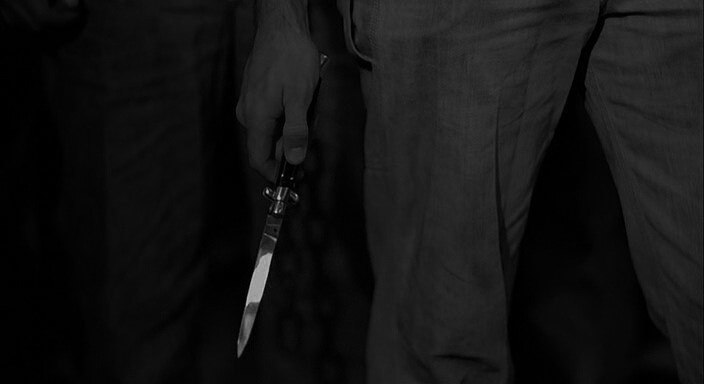

Выбор 2: Повернуться и попытаться сбежать, полагаясь на свою скорость и инстинкты.
Алексей, охваченный паникой, стремительно бросился прочь от бандитов,
его сердце стучало в унисон с шагами преследователей.
Он мчался по узким улочкам, стараясь не оглядываться, но страх сковывал его движения.
Каждый звук казался ему угрожающим, и адреналин подстегивал его к еще большей скорости.
Вдруг он свернул за угол и оказался в темной аллее, где высокие заборы преграждали путь к спасению.
Обернувшись, он увидел одного из бандитов, который приближался с ножом в руке.
Алексей понял, что у него больше нет шансов — его инстинкты подсказывали,
что нужно бороться или бежать, но выхода не было.
В этот момент он ощутил всю безысходность ситуации,
когда холодный блеск металла заставил его замереть в ожидании неизбежного. (Смерть)
